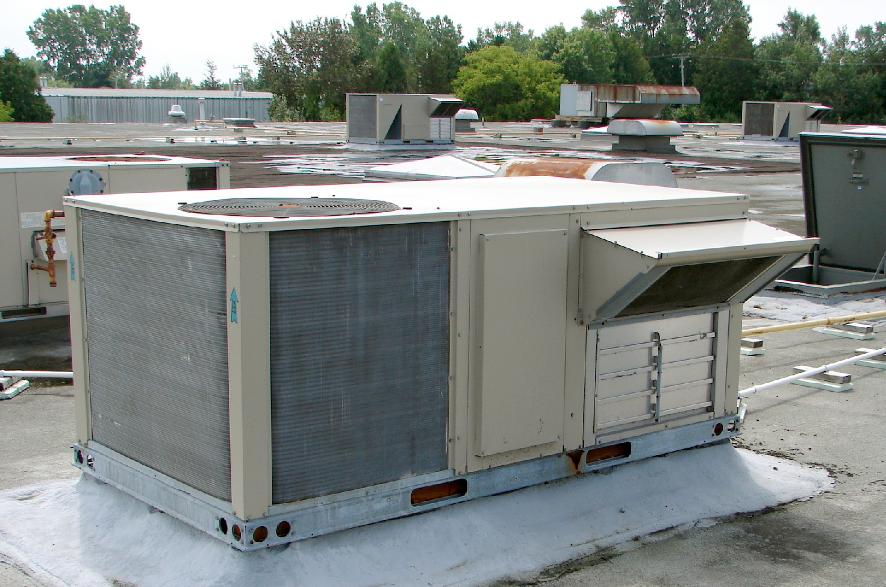

System image

What it is
A rooftop unit (RTU) is a packaged HVAC unit that sits on the roof (or on a pad) and conditions air in one place. It pulls in return air from the building, mixes in a controlled amount of outdoor air, heats/cools it, and sends it back through ductwork.
Where you’ll see it
- Retail, restaurants, small/medium offices
- Schools and gyms (larger RTUs or multiple units)
- Warehouses (often paired with big duct runs)
Main components
Outdoor air damper
Return/relief section
Filters
Cooling coil (DX)
Gas heat / heat pump
Supply fan
Economizer (optional)
Controls
Packaged = most of these parts are in one factory-built cabinet.
How it works
- Mix air: Return air + a measured amount of outdoor air.
- Filter: Remove dust and particles.
- Condition: Cooling coil and/or heat section adjusts supply temperature.
- Deliver: Supply fan pushes air through ducts to diffusers.
- Return: Air comes back through return grilles and repeats.
Pros / Cons
Pros
- Simple, common, lots of contractor familiarity
- All-in-one equipment (easy replacement)
- Good option when you have ceiling plenum/duct space
Cons
- Ductwork can be bulky
- Roof coordination: structure, curb, access, noise
- Humidity control varies by unit and controls strategy